On the Structures of Representation for the Robustness of Semantic Segmentation to Input Corruption
Introduction
I wanted to provide some additional resources beyond the above linked paper and code to reproduce our results. Below is mostly the same code provided in the repository—things like prints, form renderings for Google Colab, and rendered tqdm progress bars have been removed. Please be sure to expand the “show code >” buttons to look at the code that generated the corresponding outputs/results.
General Imports and Visualiztion methods
We will be importing some of the required libraries here and build out the machinery for visualizing the results of this work. Of note in colorize_voc_label, is assigning the color white to classes above 20. This is to account for 255 being used to indicate the “ignore” class. For visualize, the assumption is the arguments are torch.Tensor instances that are the outputs of our models.
import numpy as np
import torch
from functools import partial
import os
from PIL import Image
import matplotlib
%matplotlib inline
from matplotlib import pyplot as plt
from matplotlib import gridspec
from matplotlib import cm
from matplotlib.colors import ListedColormap, LinearSegmentedColormap
def colorize_voc_label(lbl):
voc_colors = [[0, 0, 0], [128, 0, 0], [0, 128, 0], [128, 128, 0],
[0, 0, 128], [128, 0, 128], [0, 128, 128], [128, 128, 128],
[64, 0, 0], [192, 0, 0], [64, 128, 0], [192, 128, 0],
[64, 0, 128], [192, 0, 128], [64, 128, 128], [192, 128, 128],
[0, 64, 0], [128, 64, 0], [0, 192, 0], [128, 192, 0],
[0, 64, 128]]
voc_colors = np.array(voc_colors)/255
voc_cmap = ListedColormap(voc_colors)
cmap_lbl = voc_cmap(lbl/20)
cmap_lbl[lbl>20,:3] = (1,1,1)
return cmap_lbl
def visualize(im, lbl, pred=None):
im = im.permute(1,2,0).numpy()
lbl = lbl.squeeze().numpy()
cols = 3 if pred is not None else 2
fig, ax = plt.subplots(1,cols)
im = ((im*MEAN_STD['std']+MEAN_STD['mean'])*255).astype(np.uint8)
ax[0].imshow(im)
ax[0].set_title('Image')
ax[1].imshow(colorize_voc_label(lbl))
ax[1].set_title('Label')
ax[0].axis('off')
ax[1].axis('off')
if pred is not None:
pred = pred.squeeze().numpy()
ax[2].imshow(colorize_voc_label(pred))
ax[2].set_title('Pred')
ax[2].axis('off')
return fig, axSegmentation Transforms
Now we build out the joint transform used during training and validation that is compatible with torchvision.datasets.VOCSegmentation. This requires the joint_transforms module provided in the above linked code.
from torchvision import transforms
import joint_transforms
MEAN_STD = {"mean":(0.485, 0.456, 0.406), "std":(0.229, 0.224, 0.225)}
base_size = 224
crop_size = 224
class ImLblTransform(object):
def __init__(self, train):
self.joint_train = []
im_tran = [
transforms.ToTensor(),
transforms.Normalize(**MEAN_STD)
]
if train:
self.joint_train.append(joint_transforms.RandomScaleCrop(base_size, crop_size, fill=255))
im_tran.insert(0,transforms.ColorJitter(brightness=0.3, contrast=0.3, saturation=0.3, hue=0.1))
else:
self.joint_train.append(joint_transforms.FixScaleResize(base_size))
self.img_transform = transforms.Compose(im_tran)
def __call__(self, img, lbl):
for tfm in self.joint_train:
img, lbl = tfm(img, lbl)
img = self.img_transform(img)
lbl = np.array(lbl).astype(np.float32)
lbl = torch.from_numpy(lbl).float()
return img, lblVOC2012
Now to put our visualize method to work, we can look at the first image and label pair in the VOC2012 training set.
from torchvision.datasets import VOCSegmentation
voc_train = VOCSegmentation(root='/data/datasets/', transforms=ImLblTransform(True))
voc_val = VOCSegmentation(root='/data/datasets/', transforms=ImLblTransform(False), image_set='val')
im_,lbl_ = voc_train[0]
fig, ax = visualize(im_,lbl_)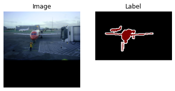
SBD
Next, we want to append the VOC2012 training set with the “train_noval” subset of SBDataset as provided by torchvision to have a total of 7087 training examples. Notice as we visualize an example from SBDataset that they differ in that the transitions from foreground to background is not bordered by the “ignore” class.
show code
from torchvision.datasets import SBDataset
sbd_train = SBDataset(root='/data/datasets/SBD', image_set='train_noval',
mode='segmentation', transforms=ImLblTransform(True))
im_,lbl_ = sbd_train[0]
fig, ax = visualize(im_,lbl_)
Dataloader
Now to bring the datasets together for use in training and validation. If you will be implementing this yourself, note that we used a batch size of 20, which may exceed the memory available on your GPU.
show codefrom torch.utils import data
vocsbd_train = data.ConcatDataset([voc_train, sbd_train])
train_iter = data.DataLoader(vocsbd_train, batch_size=20, shuffle=True,
num_workers=12, pin_memory=True, drop_last=True)
STEPS_PER_EPOCH = len(train_iter)
print('Steps per Epoch: {}'.format(STEPS_PER_EPOCH))
val_iter = data.DataLoader(voc_val, batch_size=1, shuffle=False,
num_workers=12, pin_memory=True)Steps per Epoch: 354
Corruptions
Corruptions to Transform
In order to use the machinery in pytorch we wrapped the corruption methods from the imagenet-c package in the standard pytorch transform interface. ImageNet-C is part of a collection of work on studying the impacts of corruptions by Dan Hendrycks, Thomas Dietterich, and others. More details can be found on the ImageNet-C Repository.
from imagenet_c import corrupt, corruption_tuple
from functools import partial
from itertools import product as iterprod
from PIL import Image
corr_dict = {}
[corr_dict.update({p.__name__.split('_')[0]:n}) for n,p in enumerate(corruption_tuple[:15])]
print(corr_dict)
class ImLblCorruptTransform(object):
def __init__(self, severity, corruption_number):
corrupt_partial = partial(corrupt, severity=severity, corruption_number=corruption_number)
self.joint_transform = joint_transforms.FixedResize(224)
self.transform = lambda sz: transforms.Compose(
[
np.array,
corrupt_partial,
Image.fromarray,
transforms.Resize(sz),
transforms.ToTensor(),
transforms.Normalize(**MEAN_STD),
]
)
if severity == 0:
self.transform = lambda sz: transforms.Compose(
[
transforms.ToTensor(),
transforms.Normalize(**MEAN_STD)
]
)
def __call__(self, img, lbl):
img, lbl = self.joint_transform(img,lbl)
W,H = img.size
sz = (H,W)
img = self.transform(sz)(img)
lbl = np.array(lbl).astype(np.float32)
lbl = torch.from_numpy(lbl).float()
return img, lbl{
'gaussian': 0, 'shot': 1,
'impulse': 2, 'defocus': 3,
'glass': 4, 'motion': 5,
'zoom': 6, 'snow': 7,
'frost': 8, 'fog': 9,
'brightness': 10, 'contrast': 11,
'elastic': 12, 'pixelate': 13,
'jpeg': 14
}
VOC Corruptions 4,5,6,7
Glass, Motion, Zoom and Snow take a long time for each iteration, so we can gain efficiencies by preprocessing these at all corruption levels. To do so, use the provided script dump_voc_c.py with the desired corruption number and severity.
from torchvision import datasets as dsets
from torch.utils.data import Dataset, DataLoader
from PIL import Image
MEAN_STD = {"mean":(0.485, 0.456, 0.406), "std":(0.229, 0.224, 0.225)}
class d_4567(Dataset):
def __init__(self, cn, sv):
name = corruption_tuple[cn].__name__
self.name = name
self.sv = sv
imgdir = 'VOC-C/{}/{}/'.format(name,sv)
lbldir = 'VOC-C/lbl/'
self.img_list = [imgdir+f for f in os.listdir(imgdir)]
self.lbl_list = [lbldir+f for f in os.listdir(lbldir)]
self.transform = transforms.Compose(
[
transforms.ToTensor(),
transforms.Normalize(**MEAN_STD)
]
)
def __len__(self):
return len(self.img_list)
def __getitem__(self, idx):
img = Image.open(self.img_list[idx]).convert('RGB')
lbl = Image.open(self.lbl_list[idx])
img = self.transform(img)
lbl = np.array(lbl).astype(np.float32)
lbl = torch.from_numpy(lbl).float()
return img, lbl
def __str__(self):
return '{} @ {}'.format(self.name, self.sv)
d_ = d_4567(5,4)
print(d_)
im,lbl = d_[13]
fig, ax = visualize(im,lbl)
motion_blur @ 4
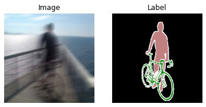
Visualize Corruptions
Here’s what the different corruption levels look like for a subset of the corruptions.
show codeindex = 687#@param {type:"integer"}
image_set = "val" #@param ["val", "train"]
from imagenet_c import corrupt, corruption_tuple
from PIL import Image
import numpy as np
from matplotlib import gridspec
dataset = VOCSegmentation(root='/data/datasets/', image_set=image_set)
im_,lbl_ = dataset[index]
w, h = im_.size
new_h = 100
new_low_h = 30
new_w = 150
ratio = w/h
s = 10
fig = plt.figure(figsize=(s*ratio, s))
gs1 = gridspec.GridSpec(5,5)
gs1.update(wspace=0.05, hspace=0.05)
orig_size = im_.size
i = 0
for cn in [0,3,7,10,12]:
for severity in [1,2,3,4,5]:
corrim = Image.fromarray(corrupt(np.array(im_.resize((224,224),2)),
severity=severity,
corruption_number=cn)).resize(orig_size)
#corrim2 = corrim.crop((w//2-new_w//2,new_h,w//2+new_w//2,h-new_low_h))
ax1 = plt.subplot(gs1[i])
ax1.set_xticklabels([])
ax1.set_yticklabels([])
ax1.grid(False)
ax1.imshow(corrim)
if severity==1:
corname = str(corruption_tuple[cn].__name__).split('_')[0]
ax1.set_ylabel(corname)
if cn==0:
ax1.set_title(severity)
i+=1
display()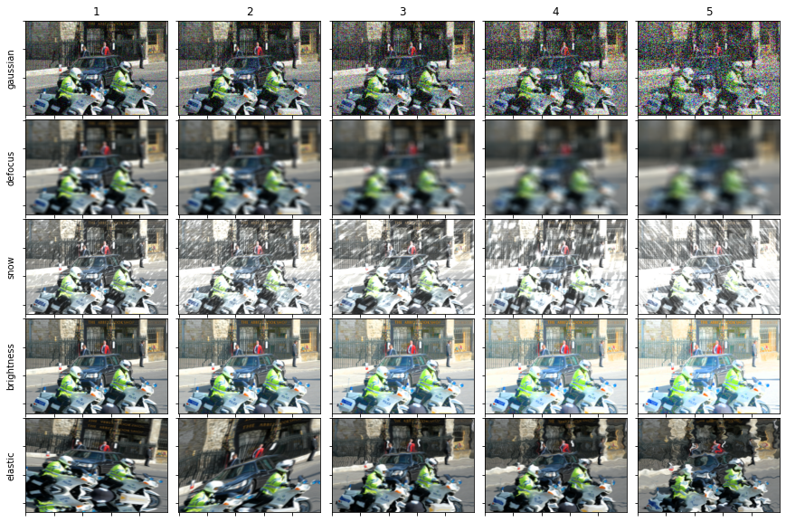
Metrics
Running Confusion Matrix
This will allow us to get metrics while running through with batches during training or in aggregate across the entire validation set.
show codeimport torch.nn.functional as F
from sklearn.metrics import confusion_matrix as conf_mat
class RunningConfusionMatrix(object):
def __init__(self, num_classes, ignore_class=None):
super(RunningConfusionMatrix, self).__init__()
self.num_classes = num_classes
self.ignore_class = ignore_class
self.reset()
def __call__(self, prediction, target):
prediction = prediction.view(-1)
target = target.view(-1)
if self.ignore_class is not None:
prediction = prediction[target!=self.ignore_class]
target = target[target!=self.ignore_class]
prediction = prediction[prediction!=self.ignore_class]
target = target[prediction!=self.ignore_class]
prediction_oh = F.one_hot(prediction, self.num_classes).float()
target_oh = F.one_hot(target.long(), self.num_classes).float()
_cm = target_oh.permute(1,0).mm(prediction_oh).long().cpu()
self.cm += _cm.cpu()
@property
def acc(self):
return self.cm.diag()/self.cm.sum(0)
@property
def iou(self):
tp = self.cm.diag()
fp = self.cm.sum(0) - tp
fn = self.cm.sum(1) - tp
return tp/(tp+fp+fn)
def reset(self):
self.cm = torch.zeros(self.num_classes, self.num_classes)Experiment
Trainer
Here is a configurable implementation of a semantic segmentation experiment.
show codefrom torchvision import utils
from IPython.display import display, clear_output
from tqdm.notebook import tqdm
from torch import nn
class SemanticSegmentation(object):
def __init__(self, config):
self.cuda = config['cuda']
self.one_hot = config['one_hot']
self.device = 'cuda' if self.cuda else 'cpu'
self.confusion_matrix = RunningConfusionMatrix(config['num_classes'], 255)
model = config['model']['class'](**config['model']['kwargs'])
criterion = config['criterion']['class'](**config['criterion']['kwargs'])
self.optimizer = config['optimizer']['class']([
{'params':model.backbone.parameters()},
{'params':model.classifier.parameters(), 'lr':config['optimizer']['kwargs']['lr']*10},
],**config['optimizer']['kwargs'])
self.train_iter = config['train_iter']['class'](**config['train_iter']['kwargs'])
self.val_iter = config['val_iter']['class'](**config['val_iter']['kwargs'])
if self.cuda:
#self.model = DataParallelModel(model.to(self.device), device_ids=[0,1])
#self.criterion = DataParallelCriterion(criterion.to(self.device), device_ids=[0,1])
self.model = nn.DataParallel(model, device_ids=[0,1]).cuda()
self.criterion = criterion
else:
self.model = model
self.criterion = criterion
self.steps = 0
self.epoch_n = 0
self.config = config
def evaluator(self):
pass
def step(self, input, target, oh_target):
name = 'Train' if self.model.training else 'Val'
output = self.model(input)
pred = output.argmax(1)
self.confusion_matrix(pred, target)
iou = self.confusion_matrix.iou
miou = iou[~torch.isnan(iou)].mean()
if self.model.training:
self.confusion_matrix.reset()
loss = self.criterion(output, oh_target if self.one_hot else target.long()).mean()
self.optimizer.zero_grad()
loss.backward()
self.optimizer.step()
self.steps += 1
_loss = loss.item()
else:
_loss = 0
self.tbar.set_description('[{} - {}] Loss: {:.3f}, mIOU: {:.3f}'.format(self.epoch_n, name, _loss, miou))
return pred.cpu()
def epoch(self, data_iter):
self.tbar = tqdm(data_iter)
for input, target in self.tbar:
_target = target.clone()
_target[target==255] = 0
oh_target = nn.functional.one_hot(_target.long(),21).permute(0,3,1,2).float()
pred = self.step(input.to(self.device),
target.to(self.device),
oh_target.to(self.device))
def train(self, num_epochs, lr_sched=True):
if lr_sched:
poly = lambda step: (1 - step/num_epochs)**0.9
else:
poly = lambda step: 1
self.lr_scheduler = torch.optim.lr_scheduler.LambdaLR(self.optimizer, lr_lambda=poly)
for n in range(num_epochs):
self.epoch_n = n
self.model.train()
self.epoch(self.train_iter)
if self.config['validate_while_train']:
self.validate()
self.lr_scheduler.step()
def validate(self):
self.confusion_matrix.reset()
self.model.eval()
self.epoch(self.val_iter)
def visualize(self, input, target, pred):
fig, ax = visualize(input[0], target[0], pred[0])Models
Below we prepare three versions of the DeepLab v3+ with ResNet50 backbone: vanilla, Implicit Background Estimation (IBE), and Sigmoid Cross Entropy Implicit Background Estimation (SCrIBE). Since the models are trained from an ImageNet pretrained ResNet50, the appropriate layers are replaced and wrapped in an nn.Module. We then train each model using the previously introduced configurable experiment.
DeepLabV3+
show codefrom torchvision.models.segmentation import deeplabv3_resnet50
from torchvision.models import resnet50
from torchvision.models._utils import IntermediateLayerGetter
from torch import nn
class DLv3_ResNet50(nn.Module):
def __init__(self, num_classes=21):
super(DLv3_ResNet50, self).__init__()
model = deeplabv3_resnet50(num_classes = num_classes)
backbone = resnet50(pretrained=True, replace_stride_with_dilation=[False, True, True])
return_layers = {'layer4': 'out'}
model.backbone = IntermediateLayerGetter(backbone, return_layers=return_layers)
self.backbone = model.backbone
self.classifier = model.classifier
def forward(self,x):
input_shape = x.shape[-2:]
features = self.backbone(x)
x = features["out"]
x = self.classifier(x)
x = F.interpolate(x, size=input_shape, mode='bilinear', align_corners=False)
return x
ns_config = {
'num_classes':21,
'one_hot':False,
'cuda':True,
'validate_while_train':True,
'model':{
'class':DLv3_ResNet50,
'kwargs':{
'num_classes':21,
},
},
'criterion':{
'class':nn.CrossEntropyLoss,
'kwargs':{
'ignore_index':255,
},
},
'optimizer':{
'class': torch.optim.SGD,
'kwargs':{
'lr':0.01,
'momentum':0.9,
'weight_decay':5e-5,
'nesterov':False
},
},
'train_iter':{
'class':data.DataLoader,
'kwargs':{
'dataset':vocsbd_train,
'batch_size':30,
'shuffle':True,
'num_workers':12,
'pin_memory':True,
'drop_last':True,
}
},
'val_iter':{
'class':data.DataLoader,
'kwargs':{
'dataset':voc_val,
'batch_size':1,
'shuffle':False,
'num_workers':1,
'pin_memory':False,
'drop_last':False,
}
}
}
pth = 'data/DLv3_ResNet50.pth'
if os.path.isfile(pth):
no_scribe_model = ns_config['model']['class'](**ns_config['model']['kwargs'])
no_scribe_model.load_state_dict(torch.load(pth))
else:
no_scribe_experiment = SemanticSegmentation(ns_config)
no_scribe_experiment.train(50, True)
no_scribe_model = no_scribe_experiment.model.module
torch.save(no_scribe_model.state_dict(), pth)
no_scribe_experiment.validate()DeepLabV3+IBE
show codeclass DLv3_ResNet50_IBE(DLv3_ResNet50):
def __init__(self, num_classes=20):
super(DLv3_ResNet50_IBE, self).__init__(num_classes=num_classes)
def forward(self,x):
input_shape = x.shape[-2:]
features = self.backbone(x)
x = features["out"]
x = self.classifier(x)
x = torch.cat([-torch.logsumexp(x,1, keepdim=True),x],1)
x = F.interpolate(x, size=input_shape, mode='bilinear', align_corners=False)
return x
i_config = {
'num_classes':21,
'one_hot':False,
'cuda':True,
'validate_while_train':True,
'model':{
'class':DLv3_ResNet50_IBE,
'kwargs':{
'num_classes':20,
},
},
'criterion':{
'class':nn.CrossEntropyLoss,
'kwargs':{
'ignore_index':255,
},
},
'optimizer':{
'class': torch.optim.SGD,
'kwargs':{
'lr':0.01,
'momentum':0.9,
'weight_decay':5e-5,
'nesterov':False
}
},
'train_iter':{
'class':data.DataLoader,
'kwargs':{
'dataset':vocsbd_train,
'batch_size':30,
'shuffle':True,
'num_workers':12,
'pin_memory':True,
'drop_last':True,
}
},
'val_iter':{
'class':data.DataLoader,
'kwargs':{
'dataset':voc_val,
'batch_size':5,
'shuffle':False,
'num_workers':1,
'pin_memory':False,
'drop_last':False,
}
}
}
pth = 'data/DLv3_IBE.pth'
if os.path.isfile(pth):
ibe_model = i_config['model']['class'](**i_config['model']['kwargs'])
ibe_model.load_state_dict(torch.load(pth))
else:
ibe_experiment = SemanticSegmentation(i_config)
ibe_experiment.train(50, True)
ibe_model = ibe_experiment.model.module
torch.save(ibe_model.state_dict(), pth)
ibe_experiment.validate()
DeepLabV3+ScrIBE
show codeclass DLv3_ResNet50_SCrIBE(DLv3_ResNet50):
def __init__(self, num_classes=20):
super(DLv3_ResNet50_SCrIBE, self).__init__(num_classes=num_classes)
def forward(self,x):
input_shape = x.shape[-2:]
_x = self.backbone(x)
x = self.classifier(_x["out"])
x = torch.cat([-torch.logsumexp(x,1, keepdim=True),x],1)
x = F.interpolate(x, size=input_shape, mode='bilinear', align_corners=False)
return x
s_config = {
'num_classes':21,
'one_hot':True,
'cuda':True,
'validate_while_train':True,
'model':{
'class':DLv3_ResNet50_SCrIBE,
'kwargs':{
'num_classes':20,
},
},
'criterion':{
'class':nn.BCEWithLogitsLoss,
'kwargs':{
},
},
'optimizer':{
'class': torch.optim.SGD,
'kwargs':{
'lr':0.01,
'momentum':0.9,
'weight_decay':5e-5,
'nesterov':False
}
},
'train_iter':{
'class':data.DataLoader,
'kwargs':{
'dataset':vocsbd_train,
'batch_size':30,
'shuffle':True,
'num_workers':12,
'pin_memory':True,
'drop_last':True,
}
},
'val_iter':{
'class':data.DataLoader,
'kwargs':{
'dataset':voc_val,
'batch_size':1,
'shuffle':False,
'num_workers':1,
'pin_memory':False,
'drop_last':False,
}
}
}
pth = 'data/DLv3_SCrIBE.pth'
if os.path.isfile(pth):
scribe_model = s_config['model']['class'](**s_config['model']['kwargs'])
scribe_model.load_state_dict(torch.load(pth))
else:
scribe_experiment = SemanticSegmentation(s_config)
scribe_experiment.train(50, True)
scribe_model = scribe_experiment.model.module
torch.save(scribe_model.state_dict(), pth)
scribe_experiment.validate()
Representation Metrics
Running Logit Tracker
Much like the Running Confusion Matrix, we will also track the logits or pre-softmax model outputs over a run of batched iterations for later analysis.
show codeclass RunningLogitTracker(object):
def __init__(self, num_classes, ignore_class=None):
super(RunningLogitTracker, self).__init__()
self.num_classes = num_classes
self.ignore_class = ignore_class
self.reset()
def __call__(self, output):
output = output.permute(0,2,3,1).reshape(-1,self.num_classes)
_pred = output.argmax(1)
for n in range(self.num_classes):
x = output[_pred==n,:].detach()
self.counts[n] += x.size(0)
self.sums[n] += x.sum(0).cpu()
self.sumsqs[n] += x.permute(1,0).mm(x).cpu()
def dist(self,x,y):
return (x-y).pow(2).sum().sqrt()
@property
def dm(self):
_dm = torch.zeros(self.num_classes, self.num_classes)
mn = self.mean
for i in range(0,self.num_classes):
for j in range(i,self.num_classes):
_dm[i,j] = self.dist(mn[i], mn[j])
_dm[j,i] = _dm[i,j]
return _dm
@property
def mean(self):
out = self.sums/self.counts.unsqueeze(1)
out[out!=out] = 0
return out
@property
def cov(self):
covs = []
for n in range(self.num_classes):
mn = self.mean[n].unsqueeze(0)
sq = self.sumsqs[n]
_cov = (sq - mn.permute(1,0).mm(mn))/self.counts[n]
_cov[_cov!=_cov] = 0
covs.append(_cov)
return torch.stack(covs,0)
@property
def cor(self):
covs = self.cov
cors = []
for n in range(self.num_classes):
S = covs[n]
Dinv = torch.inverse(S.diag().diag().sqrt())
R = Dinv.mm(S).mm(Dinv)
cors.append(R)
return torch.stack(cors,0)
def reset(self):
self.counts = torch.zeros(self.num_classes)
self.sums = torch.zeros(self.num_classes, self.num_classes)
self.sumsqs = torch.zeros(self.num_classes, self.num_classes, self.num_classes)Run over all Corruptions and Levels
Here we measure the performance of each model for each corruption at each level. This also takes a while, but has some progress saving built in.
show codeimport torch
import gc
import pandas as pd
batch = 20
nm = 'data/DistCombined.pkl'
scribe_model = scribe_model.to(0)
ibe_model = ibe_model.to(0)
no_scribe_model = no_scribe_model.to(1)
scribe_model.eval()
ibe_model.eval()
no_scribe_model.eval()
try:
dist_df = pd.read_pickle(nm).drop_duplicates()
lgst_cn = dist_df['corruption_number'].max()
lgst_sv = dist_df[dist_df['corruption_number']==lgst_cn]['Severity'].max()
print('Restarting from {}@{}'.format(lgst_cn, lgst_sv))
dist_data = dist_df.to_dict('records')
flag = False
except:
print('New Run!')
lgst_cn = 0
lgst_sv = 0
dist_data = []
flag = False
for cn in range(lgst_cn,15):
corruption_name = corruption_tuple[cn].__name__
for sv in range(6):
if sv==0 and flag:
print('Case 1: Skipping {}@{}'.format(cn, sv))
continue
if cn != lgst_cn:
lgst_sv=-1
if sv < lgst_sv:
print('Case 2: Skipping {}@{}'.format(cn, sv))
continue
s_cm = RunningConfusionMatrix(21, 255)
i_cm = RunningConfusionMatrix(21, 255)
n_cm = RunningConfusionMatrix(21, 255)
s_lt = RunningLogitTracker(21, 255)
i_lt = RunningLogitTracker(21, 255)
n_lt = RunningLogitTracker(21, 255)
if cn in [4,5,6,7]:
corr_val = d_4567(cn,sv)
else:
corr_val = VOCSegmentation(root='/data/datasets/',
transforms=ImLblCorruptTransform(sv,cn),
image_set='val')
corr_iter = data.DataLoader(corr_val, batch_size=batch, shuffle=False, num_workers=1, pin_memory=True)
pbar = tqdm(corr_iter, position=0, leave=True)
for im,lbl in pbar:
s_output = scribe_model(im.to(0))
i_output = ibe_model(im.to(0))
n_output = no_scribe_model(im.to(1))
s_pred = s_output.argmax(1)
i_pred = i_output.argmax(1)
n_pred = n_output.argmax(1)
s_cm(s_pred, lbl.to(0))
i_cm(i_pred, lbl.to(0))
n_cm(n_pred, lbl.to(1))
s_iou = s_cm.iou
s_miou = s_iou[~torch.isnan(s_iou)].mean()
i_iou = i_cm.iou
i_miou = i_iou[~torch.isnan(i_iou)].mean()
n_iou = n_cm.iou
n_miou = n_iou[~torch.isnan(n_iou)].mean()
s_lt(s_output)
i_lt(i_output)
n_lt(n_output)
pbar.set_description('{}@{} S/I/B: {:.3f} / {:.3f} / {:.3f}'.format(cn, sv, s_miou,i_miou,n_miou))
s_mn = s_lt.mean.numpy()
i_mn = i_lt.mean.numpy()
n_mn = n_lt.mean.numpy()
s_r = np.mean(np.diagonal(s_mn)[1:]-s_mn[1:,0])
i_r = np.mean(np.diagonal(i_mn)[1:]-i_mn[1:,0])
n_r = np.mean(np.diagonal(n_mn)[1:]-n_mn[1:,0])
dist_data.append(
{
'Model':'ScrIBE',
'Corruption':corruption_name,
'corruption_number':cn,
'Severity':sv,
'mIOU':s_miou.item(),
'Distance':s_r
}
)
dist_data.append(
{
'Model':'IBE',
'Corruption':corruption_name,
'corruption_number':cn,
'Severity':sv,
'mIOU':i_miou.item(),
'Distance':i_r
}
)
dist_data.append(
{
'Model':'Baseline',
'Corruption':corruption_name,
'corruption_number':cn,
'Severity':sv,
'mIOU':n_miou.item(),
'Distance':n_r
}
)
dist_df = pd.DataFrame(dist_data)
dist_df.to_pickle(nm)
flag = TrueRestarting from 14@5
Case 2: Skipping 14@0
Case 2: Skipping 14@1
Case 2: Skipping 14@2
Case 2: Skipping 14@3
Case 2: Skipping 14@4
Run Validation
show codeimport torch
import gc
import pandas as pd
torch.cuda.empty_cache()
def run_one(scribe_model, ibe_model, no_scribe_model):
scribe_model = scribe_model.to(0)
ibe_model = ibe_model.to(0)
no_scribe_model = no_scribe_model.to(1)
scribe_model.eval()
ibe_model.eval()
no_scribe_model.eval()
s_cm = RunningConfusionMatrix(21, 255)
i_cm = RunningConfusionMatrix(21, 255)
n_cm = RunningConfusionMatrix(21, 255)
s_lt = RunningLogitTracker(21, 255)
i_lt = RunningLogitTracker(21, 255)
n_lt = RunningLogitTracker(21, 255)
corr_val = VOCSegmentation(root='/data/datasets/',
transforms=ImLblTransform(False),
image_set='val')
corr_iter = data.DataLoader(corr_val, batch_size=1, shuffle=False, num_workers=1, pin_memory=True)
pbar = tqdm(corr_iter, position=0, leave=True)
for im,lbl in pbar:
s_output = scribe_model(im.to(0))
i_output = ibe_model(im.to(0))
n_output = no_scribe_model(im.to(1))
s_pred = s_output.argmax(1)
i_pred = i_output.argmax(1)
n_pred = n_output.argmax(1)
s_cm(s_pred, lbl.to(0))
i_cm(i_pred, lbl.to(0))
n_cm(n_pred, lbl.to(1))
s_iou = s_cm.iou
s_miou = s_iou[~torch.isnan(s_iou)].mean()
i_iou = i_cm.iou
i_miou = i_iou[~torch.isnan(i_iou)].mean()
n_iou = n_cm.iou
n_miou = n_iou[~torch.isnan(n_iou)].mean()
s_lt(s_output)
i_lt(i_output)
n_lt(n_output)
pbar.set_description('S/I/B: {:.3f} / {:.3f} / {:.3f}'.format(s_miou,i_miou,n_miou))
return s_lt, i_lt, n_lt
s_lt, i_lt, n_lt = run_one(scribe_model, ibe_model, no_scribe_model)Dimensionality Analysis
Explained Variance
show codefrom sklearn.decomposition import PCA
import seaborn as sns
import pandas as pd
sns.set_style("whitegrid")
sns.set_context("paper", font_scale=1.5, rc={"lines.linewidth": 2.5})
pca_data = []
pca = PCA(n_components=21)
pca.fit(s_lt.mean)
s_cs = pca.explained_variance_ratio_.cumsum()
pca = PCA(n_components=21)
pca.fit(i_lt.mean)
i_cs = pca.explained_variance_ratio_.cumsum()
pca = PCA(n_components=21)
pca.fit(n_lt.mean)
n_cs = pca.explained_variance_ratio_.cumsum()
for m, p in zip(['SCrIBE', 'IBE', 'Baseline'],[s_cs, i_cs, n_cs]):
for x,y in enumerate(p):
_d = {
'Model': m,
'Variant': 'Single',
'Component':x,
'Explained Variance':y
}
pca_data.append(_d)
pca_df = pd.DataFrame(pca_data)
fig, ax = plt.subplots(figsize=[10,3])
sns.lineplot(ax=ax,data=pca_df, x='Component', y='Explained Variance', hue='Model', hue_order =['Baseline', 'IBE', 'SCrIBE'])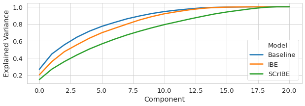
Structural Analysis
show codefrom torchvision.utils import make_grid
from matplotlib.colors import LogNorm
import seaborn as sns
from mpl_toolkits.axes_grid1 import make_axes_locatable
sns.set(style="whitegrid")
sns.set_context("poster", font_scale=1.5, rc={"lines.linewidth": 2.5})
fig, ax = plt.subplots(1,3, figsize=(14,4))
s_mn = s_lt.mean.numpy()
i_mn = i_lt.mean.numpy()
n_mn = n_lt.mean.numpy()
s_r = np.diagonal(s_mn)-s_mn[:,0]
i_r = np.diagonal(i_mn)-i_mn[:,0]
n_r = np.diagonal(n_mn)-n_mn[:,0]
_mx = max([s_mn[s_mn!=-255].max(), i_mn[i_mn!=-255].max(), n_mn[n_mn!=-255].max()])
_mn = min([s_mn[s_mn!=-255].min(), i_mn[i_mn!=-255].min(), n_mn[n_mn!=-255].min()])
im = ax[0].imshow(s_mn, vmin=_mn, vmax=_mx, cmap='plasma')
ax[1].imshow(i_mn, vmin=_mn, vmax=_mx, cmap='plasma')
ax[2].imshow(n_mn, vmin=_mn, vmax=_mx, cmap='plasma')
ax[0].axis('off')
ax[1].axis('off')
ax[2].axis('off')
cbar_ax = fig.add_axes([0.95, 0.15, 0.05, 0.7])
fig.colorbar(im, cax=cbar_ax)
plt.show()
fig, ax = plt.subplots(1,3, figsize=(14,4))
s_mn = s_lt.dm.numpy()
i_mn = i_lt.dm.numpy()
n_mn = n_lt.dm.numpy()
_mx = max([s_mn[s_mn!=-255].max(), i_mn[i_mn!=-255].max(), n_mn[n_mn!=-255].max()])
_mn = min([s_mn[s_mn!=-255].min(), i_mn[i_mn!=-255].min(), n_mn[n_mn!=-255].min()])
im = ax[0].imshow(s_mn, vmin=_mn, vmax=_mx, cmap='plasma')
ax[1].imshow(i_mn, vmin=_mn, vmax=_mx, cmap='plasma')
ax[2].imshow(n_mn, vmin=_mn, vmax=_mx, cmap='plasma')
ax[0].axis('off')
ax[1].axis('off')
ax[2].axis('off')
cbar_ax = fig.add_axes([0.95, 0.15, 0.05, 0.7])
fig.colorbar(im, cax=cbar_ax)
plt.show()
s_im = make_grid(s_lt.cor.unsqueeze(1), nrow=3, padding=2, pad_value=-255)[0,:,:].numpy()
i_im = make_grid(i_lt.cor.unsqueeze(1), nrow=3, padding=2, pad_value=-255)[0,:,:].numpy()
n_im = make_grid(n_lt.cor.unsqueeze(1), nrow=3, padding=2, pad_value=-255)[0,:,:].numpy()
_mx = max([s_im[s_im!=-255].max(), n_im[n_im!=-255].max()])
_mn = min([s_im[s_im!=-255].min(), n_im[n_im!=-255].min()])
print(_mn,_mx)
fig, ax = plt.subplots(1,3, figsize=(14,9))
im = ax[0].imshow(s_im, vmin=0.8, vmax=_mx, cmap='plasma')
im = ax[1].imshow(i_im, vmin=0.8, vmax=_mx, cmap='plasma')
ax[2].imshow(n_im, vmin=_mn, vmax=_mx, cmap='plasma')
ax[0].axis('off')
ax[1].axis('off')
ax[2].axis('off')
cbar_ax = fig.add_axes([0.95, 0.15, 0.05, 0.7])
fig.colorbar(im, cax=cbar_ax)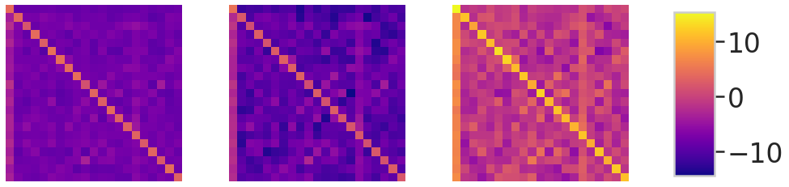
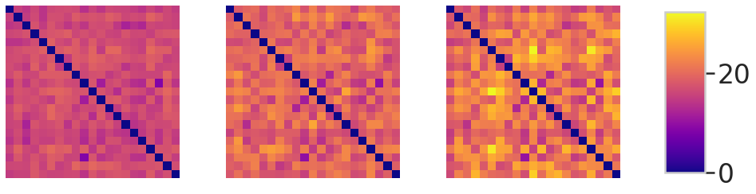
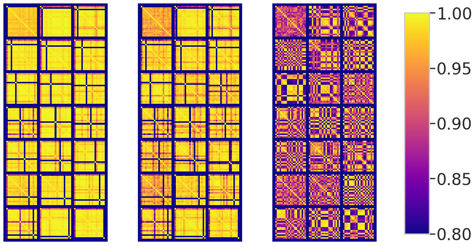
show codesns.set(style="whitegrid")
sns.set_context("paper", font_scale=2.0, rc={"lines.linewidth": 2.5})
s_im = make_grid(s_lt.cor[-8:-7].unsqueeze(1), nrow=3, padding=2, pad_value=-255)[0,:,:].numpy()
i_im = make_grid(i_lt.cor[-8:-7].unsqueeze(1), nrow=3, padding=2, pad_value=-255)[0,:,:].numpy()
n_im = make_grid(n_lt.cor[-8:-7].unsqueeze(1), nrow=3, padding=2, pad_value=-255)[0,:,:].numpy()
s_mn = s_lt.mean.numpy()
i_mn = i_lt.mean.numpy()
n_mn = n_lt.mean.numpy()
_mn, _mx = -1,1
fig, ax = plt.subplots(1,3, figsize=(10,3))
ax[0].set_title('SCrIBE')
im1 = ax[0].imshow(s_im, vmin=_mn, vmax=_mx, cmap='plasma')
ax[1].set_title('IBE')
im2 = ax[1].imshow(i_im, vmin=_mn, vmax=_mx, cmap='plasma')
ax[2].set_title('Baseline')
im3 = ax[2].imshow(n_im, vmin=_mn, vmax=_mx, cmap='plasma')
ax[0].axis('off')
ax[1].axis('off')
ax[2].axis('off')
cbar_ax = fig.add_axes([0.95, 0.15, 0.04, 0.70])
fig.colorbar(im3, cax=cbar_ax)
plt.show()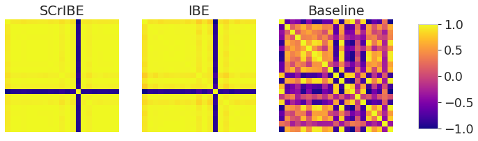
Qualitative Result Visualizations
Make a list of images from Validation set
show codefrom joint_transforms import FixedResize
class ImViewLblTransform(object):
def __init__(self):
im_tran = [
transforms.ToTensor(),
transforms.Normalize(**MEAN_STD)
]
self.joint_train = FixedResize(224)
self.img_transform = transforms.Compose(im_tran)
def __call__(self, img, lbl):
img, lbl = self.joint_train(img, lbl)
img = self.img_transform(img)
lbl = np.array(lbl).astype(np.float32)
lbl = torch.from_numpy(lbl).float()
return img, lbl
voc_val = VOCSegmentation(root='/data/datasets/',
transforms=ImViewLblTransform(),
image_set='val')
val_set_list = []
for im, lbl in list(voc_val):
im = im*torch.tensor(MEAN_STD['std']).reshape(3,1,1)+torch.tensor(MEAN_STD['mean']).reshape(3,1,1)
val_set_list.append(im)Render 100 of them starting at some index
show codedelta = 700#@param {type:"integer"}
from torchvision.utils import make_grid
import matplotlib.patheffects as path_effects
img = make_grid(torch.stack(val_set_list[0+delta:100+delta]), nrow=10, padding=1).permute(1,2,0).detach().cpu().numpy()
fig = plt.figure(figsize=(20,20))
ax = fig.add_axes([0,0,1,1])
plt.imshow(img)
n = 0
for i in range(10):
for j in range(10):
txt = ax.text(.05+j/10, .95-i/10,
n+delta,
horizontalalignment='center',
verticalalignment='center',
transform=ax.transAxes
)
txt.set_path_effects([path_effects.Stroke(linewidth=3, foreground='white'),
path_effects.Normal()])
n += 1
plt.axis('off')
plt.show()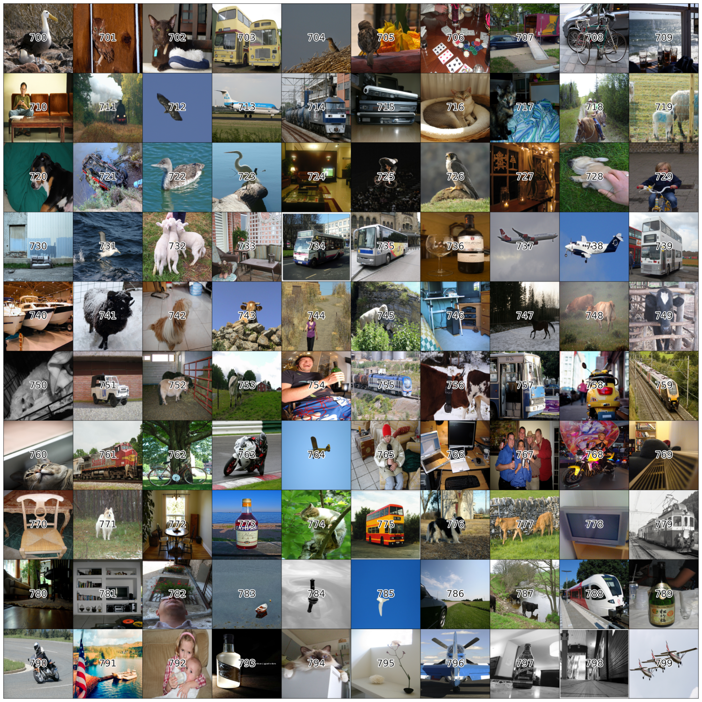
Generate Results to Visualize
Here we pick one from the group above and collect outputs for all models and corruptions at 3 levels for visualization. Crop top and crop bottom allow for adjusting the very tall figure.
show codedataset_index = 790#@param {type:"number"}
crop_top = 50#@param {type:"number"}
crop_bot = 1#@param {type:"number"}
Dataset = "val" #@param ["val", "train"]
from torchvision.utils import make_grid
from matplotlib.figure import figaspect
preds=[]
scribe_model = scribe_model.to(0)
no_scribe_model = no_scribe_model.to(1)
scribe_model.eval()
no_scribe_model.eval()
corr_disp_list = [0,3,7,10,12]
sv_list = range(0,4)
for cn in corr_disp_list:
for sv in sv_list:
voc_val = VOCSegmentation(root='/data/datasets/',
transforms=ImLblCorruptTransform(sv,cn),
image_set=Dataset)
im, lbl = voc_val[dataset_index]
c,h,w = im.shape
output = scribe_model(im.unsqueeze(0).to(0))
pred = output.argmax(1).cpu().squeeze().numpy()
pred = torch.tensor(colorize_voc_label(pred)[:,:,:3]).float().permute(2,0,1)
noutput = no_scribe_model(im.unsqueeze(0).to(1))
npred = noutput.argmax(1).cpu().squeeze().numpy()
npred = torch.tensor(colorize_voc_label(npred)[:,:,:3]).float().permute(2,0,1)
lbl= torch.tensor(colorize_voc_label(lbl)[:,:,:3]).float().permute(2,0,1)
im = im*torch.tensor(MEAN_STD['std']).reshape(3,1,1)+torch.tensor(MEAN_STD['mean']).reshape(3,1,1)
im = im[:,crop_top:-crop_bot,:]
pred = pred[:,crop_top:-crop_bot,:]
npred = npred[:,crop_top:-crop_bot,:]
lbl = lbl[:,crop_top:-crop_bot,:]
imp = torch.cat([im,npred,pred],1)
preds.append(imp.detach().cpu())
if sv==0:
or_img = im.permute(1,2,0).detach().cpu().numpy()
or_lbl = lbl.permute(1,2,0).detach().cpu().numpy()
sm_lbl = nn.functional.interpolate(lbl.unsqueeze(0), scale_factor=.4).squeeze()
sl_c,sl_h,sl_w = sm_lbl.shape
oi_c,oi_h,oi_w = lbl.shape
mod_img = im.clone()
mod_img[:,oi_h-sl_h:,oi_w-sl_w:] = sm_lbl
pristine = make_grid(torch.stack([mod_img,npred,pred]),nrow=3,padding=0)
pristine_ = pristine.permute(1,2,0).detach().cpu().numpy()
Visualize that collections
This is the visualization code used to generate a figure in the paper.
show codepreds = torch.stack(preds)
preds = make_grid(preds,nrow=len(sv_list),padding=0)
disp_im = preds.permute(1,2,0).numpy()[0:len(corr_disp_list)*h*3,1*w:]
d_h,d_w,_ = disp_im.shape
p_h,p_w,_ = pristine_.shape
p_w = d_w*3/(len(sv_list)-1)
p_h *= d_w/p_w
d_h /= 96
d_w /= 96
p_h /= 96
p_w /= 96
tot_h = (d_h+p_h)/0.7
tot_w = (d_w+p_w)/0.8
plt.rcParams.update({'font.size': 18})
fig = plt.figure(figsize=(tot_w,tot_h))
ax_ = fig.add_axes([0.1,d_h/tot_h+0.12,0.8,p_h/tot_h])
ax_.axis('off')
ax_.imshow(pristine_)
ax_.text(1/(2*3)+1/3*0,1,
'Input',
horizontalalignment='center',
verticalalignment='bottom',
transform=ax_.transAxes
)
ax_.text(1/(2*3)+1/3*1,1,
'Baseline',
horizontalalignment='center',
verticalalignment='bottom',
transform=ax_.transAxes
)
ax_.text(1/(2*3)+1/3*1,1.15,
'Original',
horizontalalignment='center',
verticalalignment='bottom',
transform=ax_.transAxes,
fontweight='bold'
)
ax_.text(1/(2*3)+1/3*2,1,
'SCrIBE',
horizontalalignment='center',
verticalalignment='bottom',
transform=ax_.transAxes
)
ax = fig.add_axes([0.1,0.1,0.8,d_h/tot_h])
ax.axis('off')
n_corr = len(corr_disp_list)
y_start = (1-1/(2*n_corr*3))
y_step = 1/(n_corr)
ax.imshow(disp_im)
for j, cn in enumerate(corr_disp_list):
nm = corruption_tuple[cn].__name__.split('_')[0].capitalize()
ax.text(-.01,y_start-y_step*j, nm,
horizontalalignment='right',
verticalalignment='center',
transform=ax.transAxes,
rotation=90,
fontweight='bold'
)
ax.text(-.01,y_start-y_step/3-y_step*j,
'Baseline',
horizontalalignment='right',
verticalalignment='center',
rotation=90,
transform=ax.transAxes
)
ax.text(-.01,y_start-2*y_step/3-y_step*j,
'SCrIBE',
horizontalalignment='right',
verticalalignment='center',
rotation=90,
transform=ax.transAxes
)
x_start = 1/(2*(len(sv_list)-1))
x_step = 1/(len(sv_list)-1)
for sv in sv_list[1:]:
ax.text(x_start+x_step*(sv-1),1,
sv,
horizontalalignment='center',
verticalalignment='bottom',
transform=ax.transAxes
)
ax.text(x_start+x_step*(2-1),1.01,
'Corrupted',
horizontalalignment='center',
verticalalignment='bottom',
transform=ax.transAxes,
fontweight='bold'
)
display()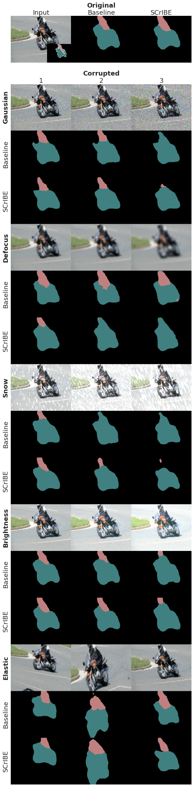
Performance Comparison Plot
show codeimport matplotlib as mpl
import seaborn as sns
import pandas as pd
sns.set_style("whitegrid")
sns.set_context("poster")
df = pd.read_pickle('data/DistCombined.pkl')
rgbs = [(213/255, 94/255, 0/255), (86/255, 180/255, 233/255), (.9, .9, .9)]
cblind = [mpl.colors.to_hex(r) for r in rgbs]
cblind_gray = [mpl.colors.to_hex(
mpl.colors.hsv_to_rgb(mpl.colors.rgb_to_hsv(r) * (1,0,1)))
for r in rgbs]
pal = sns.color_palette(cblind)
sns.palplot(pal)
fig, ax = plt.subplots(figsize=(9*1.618,7))
sns.lineplot(x='Severity', y='mIOU', data=df, ax=ax, hue='Model')
#plt.legend(bbox_to_anchor=(1.05,1), loc=2, borderaxespad=0.)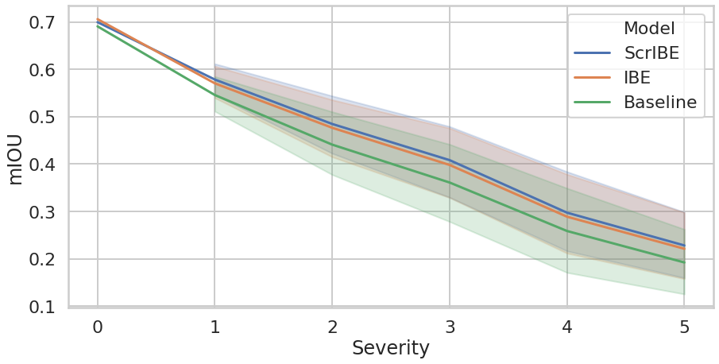
Example Videos
Load the video
Here we provide the code that was used to produce the introduction demo that was used in the presentation video.
show code
import skvideo.io
video = 'walkAS.mp4'
videodata = skvideo.io.vread(f'example_videos/{video}')
Prepare the corrupting transform
show codeclass ImCorruptTransform(object):
def __init__(self, severity, corruption_number, red_size):
corrupt_partial = partial(corrupt, severity=severity, corruption_number=corruption_number)
self.transform = lambda sz: transforms.Compose(
[
np.array,
corrupt_partial,
Image.fromarray,
transforms.Resize(sz),
transforms.ToTensor(),
transforms.Normalize(**MEAN_STD),
]
)
if severity == 0:
self.transform = lambda sz: transforms.Compose(
[
transforms.Resize(sz),
transforms.ToTensor(),
transforms.Normalize(**MEAN_STD)
]
)
self.red_size = red_size
def __call__(self, img):
img = Image.fromarray(img)
img = img.resize(self.red_size)
W,H = img.size
sz = (H,W)
img = img.resize((224,224),Image.BILINEAR)
img = self.transform(sz)(img)
return img
Generate the demo video
Here we equally divide the frames amongst corruptions and processing them through SCrIBE and the baseline models.
show codens_preds = []
s_preds = []
ims = []
corr_ims = []
corr_txts = []
switch = videodata.shape[0]//13
sv = 0
cn =0
pbar = tqdm(enumerate(videodata), total=videodata.shape[0])
for k, im in pbar:
if k%switch==0 and k!=0:
sv = 2
cn += 1
if cn == 8:
cn += 1
if cn == 12:
sv = 3
if cn > 0:
corr_txts.append(corruption_tuple[cn].__name__)
else:
corr_txts.append('None')
pbar.set_description(corr_txts[-1])
transform = ImCorruptTransform(sv,cn, (480,270))
ims.append(np.array(transforms.Resize(270)(Image.fromarray(im))))
im = transform(im)
corr_ims.append(im.permute([1,2,0]).numpy())
im = im.unsqueeze(0)
s_pred = scribe_model(im.to(0))
s_pred = s_pred.argmax(1).cpu().numpy()
s_c_out = colorize_voc_label(s_pred)
s_preds.append(s_c_out[:,:,:,:3])
ns_pred = no_scribe_model(im.to(1))
ns_pred = ns_pred.argmax(1).cpu().numpy()
ns_c_out = colorize_voc_label(ns_pred)
ns_preds.append(ns_c_out[:,:,:,:3])
ns_preds = np.concatenate(ns_preds)
s_preds = np.concatenate(s_preds)Animate
This takes a while. I am sure there is a faster way…
show codeimport matplotlib.pyplot as plt
from matplotlib import animation, rc
rc('animation', html='html5')
print(ims[0].shape, corr_ims[0].shape)
def join_ex(im,corrim,ns_pred,s_pred):
im = im/255.0
corrim = corrim*MEAN_STD['std']+MEAN_STD['mean']
corrim = np.clip(corrim,0,1)
top = np.concatenate([im, corrim],1)
bot = np.concatenate([ns_pred, s_pred],1)
return np.concatenate([top,bot], 0)
my_dpi = 960
fig, ax = plt.subplots(1,figsize=(1920/my_dpi, 1080/my_dpi), dpi=my_dpi)
vis = ax.imshow(join_ex(ims[0],corr_ims[0], ns_preds[0], s_preds[0]))
corrtxt = ax.text(500, 30, f'Corruption: None', fontsize=3, color='red', fontweight='bold')
corrtxt.set_path_effects([path_effects.Stroke(linewidth=1, foreground='black'), path_effects.Normal()])
theirs = ax.text(20, 300, f'Theirs', fontsize=3, color='red', fontweight='bold')
theirs.set_path_effects([path_effects.Stroke(linewidth=1, foreground='black'), path_effects.Normal()])
ours = ax.text(500, 300, f'Ours', fontsize=3, color='red', fontweight='bold')
ours.set_path_effects([path_effects.Stroke(linewidth=1, foreground='black'), path_effects.Normal()])
def animate(i):
corrtxt.set_text(f'Corruption: {corr_txts[i]}')
vis.set_array(join_ex(ims[i],corr_ims[i], ns_preds[i], s_preds[i]))
return [vis]
def init():
vis.set_array(join_ex(ims[0],corr_ims[0], ns_preds[0], s_preds[0]))
return [vis]
fig.tight_layout()
fig.subplots_adjust(left=0, bottom=0, right=1, top=1, wspace=None, hspace=None)
ax.set_axis_off()
ani = animation.FuncAnimation(fig, animate, frames=s_preds.shape[0], interval=30, blit=True, init_func=init)
(270, 480, 3) (270, 480, 3)
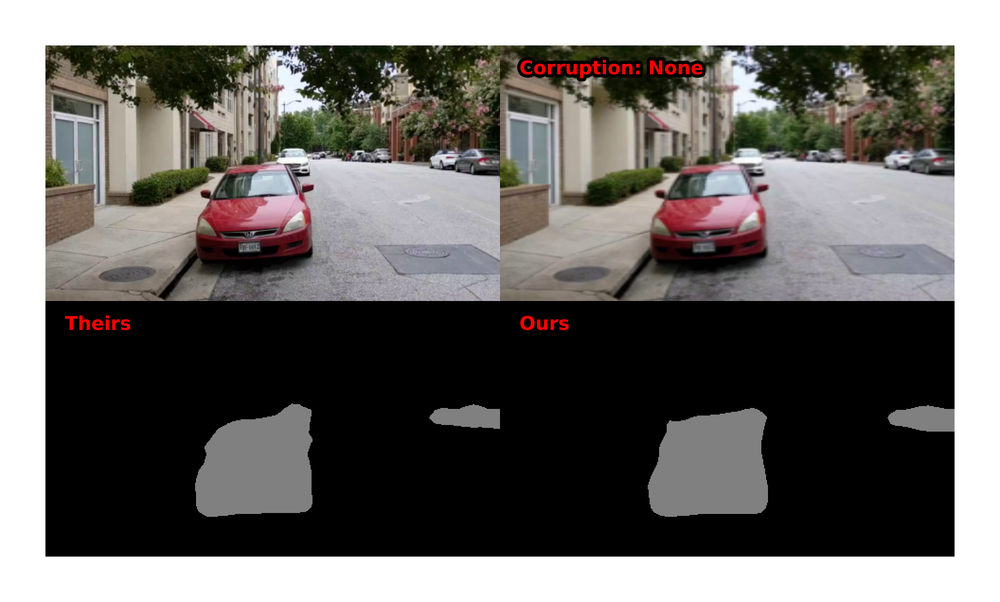
show code# Set up formatting for the movie files
Writer = animation.writers['ffmpeg']
writer = Writer(fps=30, metadata=dict(artist='Me'), bitrate=18000)
ani.save(f'example_videos/scribe_pred_{video}', writer=writer)Thank you for making it to the bottom of this post. I hope you will feel more comfortable reproducing our work. Please feel free to contact me with any questions or comments.
Charlie Lehman
PhD Student
My research interests include robustness and explainability of deep vision models.
Related
- On the Structures of Representation for the Robustness of Semantic Segmentation to Input Corruption
- Robustness and Overfitting Behavior of Implicit Background Models
- Robustness and Overfitting Behavior of Implicit Background Models
- S6:Semi-Supervised Self-Supervised Semantic Segmentation
- S6:Semi-Supervised Self-Supervised Semantic Segmentation